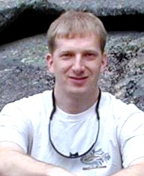

|  | James Douglas Myers
NCSA, University of Illinois |
|
Bio: James D. Myers, Ph.D. PROFESSIONAL PREPARATION: Dr. Myers received his B.A. in Physics from Cornell University in 1985 and his Ph.D. in Chemistry from the University of California at Berkeley in 1993. He is currently the Acting Associate Director for Cyberenvironments at the National Center for Supercomputing Applications (NCSA) at the University of Illinois, Urbana Champaign. He is the lead investigator on the U.S. Department of Energy (DOE) sponsored Scientific Annotation Middleware project (http://www.scidac.org/SAM/) (scientific content management, semantic annotation, and records functionality) and is serving as the Chief Technical Officer for the DOE-sponsored Collaboratory for Multiscale Chemical Science (CMCS) project. His is also the lead architect for the Mid-America Earthquake Center’s MAEViz hazard risk management collaboratory and co-lead of NCSA’s Collaborative Large-scale Engineering Analysis Network for Environmental Research (CLEANER) related cybercollaboratory effort. Dr. Myers has been developing and deploying open source collaborative tools for more than a decade and has significant experience in managing multi-institution projects and in standards efforts related to collaboratories, metadata management, data provenance, and semantic grids. APPOINTMENTS: • Acting Associate Director, Cyberenvironments Directorate, NCSA, 2005-present • Associate Director, Collaborative Technologies Division, NCSA, 2005-present • Chief Scientist, 1999-2005, Computational Science and Mathematics Division, Pacific Northwest National Laboratory • Senior Research Scientist, 1996-1999, Research Scientist 1993-1996, Computing and Information Sciences, Environmental Molecular Sciences Laboratory, Pacific Northwest National Laboratory MOST RELEVANT PUBLICATIONS: • A Collaborative Informatics Infrastructure for Multi-scale Science, Myers, J.D., Allison, T.C., Bittner, S., Didier, B., Frenklach, M., Green, W.H. Jr., Ho, Y.-L., Hewson, J., Koegler, W., Lansing, C., Leahy, D., Lee, M., McCoy, R., Minkoff, M., Nijsure, S., von Laszewski, G., Montoya, D., Pancerella, C., Pinzon, R., Pitz, W., Rahn, L.A., Ruscic, B., Schuchardt, K., Stephan, E., Wagner, A., Windus, T., Yang, C., , Proceedings of the Challenges of Large Applications in Distributed Environments (CLADE) Workshop, June 7, 2004 • Multi-Scale Science:Supporting Emerging Practice with Semantically Derived Provenance, James D. Myers, Carmen Pancerella, Carina Lansing , Karen L. Schuchardt, and Bret Didier, Proceedings of the Semantic Web Technologies for Searching and Retrieving Scientific Data Workshop, Sanibel Island, FL, Oct 20, 2003 • Re-Integrating The Research Record, James D. Myers, Alan R. Chappell, Matthew Elder, Al Geist, Jens Schwidder, Computing in Science and Engineering, May/June 2003 • Development and Use of a Virtual NMR Facility, Kelly A. Keating, James D. Myers, Jeffrey G. Pelton, Raymond A. Bair, David E. Wemmer, and Paul D. Ellis, Journal of Magnetic Resonance, vol. 143, pp172-183, 2000 • "Collaboratories: Bringing National Laboratories into the Undegraduate Classroom and Laboratory via the Internet", Jim Myers, Norman Chonacky, Thom Dunning, and Eric Leber, Council on Undergraduate Research (CUR) Quarterly, vol. 17, number 3, March 1997 SELECTED ACTIVITIES / EXPERIENCE: • Program Committee, WWW 2006, E* Applications: E-Commerce, E-Business, E-Science, E-Learning, and E-Communities Track • DOE SciDAC and National Collaboratories Program Pilot Grid projects Reviewer • Java Content Repository (JCR) Standard Specification (JSR#170) Expert Group • Network for Earthquake Engineering Simulation Grid (NEESgrid) External Advisory Board • NSF Science, Technology, Engineering, and Mathematics (STEM) Digital Library (NSDL) Program Reviewer • U. Michigan-led Science of Collaboratories Project (www.scienceofcollaboratories.org) Participant • Collaboratory for Undergraduate Research and Education (CURE) Workshop Series Co-Chair Platform:
The Sakai project is having major success in creating a de-facto standard for Collaborative Learning Environments. It has also raised interest as a tool for research and as a means to bridge research and education. I believe this is a critical point at which Sakai needs to balance a continuing focus on education with a more coherent outreach to researchers and to cyberinfrastructure developers. Why? There have been a number of pilot projects to develop research environments using Sakai and its precursors (e.g. CHEF), several of which I’ve been involved with as architect, advisor, or reviewer, that I think have helped the Sakai team to refine aspects of the Sakai architecture to improve its robustness and flexibility. Given the energy within NSF and other agencies for the development of cyberinfrastructure, and the breadth of the overall cyberinfrastructure vision, I think Sakai has an opportunity for increased leverage of the expertise and resources being applied to the development of cyberinfrastructure by playing a coordinating role in both the research and education communities. The interest in Sakai from the research community is real. The concepts of a framework to allow groups to manage their activity and context, and of building tools to be aware of and contribute to that shared group context are increasingly seen as a core requirement in supporting complex research initiatives. Sakai can provide a robust foundation in this area and, if the development of research-oriented tools can be coordinated in the way the Sakai project has coordinated the development of educational tools, Sakai could quickly have a wide impact in the research community. A common platform for research and education collaborations could lower the barriers to adoption of cyberinfrastructure and could enable revolutionary combinations of research and education activities. Sakai has the opportunity to prevent balkanization of the collaboration and tool integration layer of cyberinfrastructure and to enable new synergies that bring authentic research activities into the classroom and enhance the life-long learning opportunities in research settings. Over the past decade there have been some very exciting projects using collaboratory and grid technologies in this manner; a shared platform could make such an integrated approach ubiquitous. The time is right for a more coordinated outreach to the research community. Creating an infrastructure requires consideration of architecture and scalability and, as we move now from pilot projects to persistent cyberinfrastructure, there are opportunities. I believe that such outreach can be managed without disrupting Sakai’s progress in serving the needs of the education community; the additional energy and expertise that would be brought to the Sakai platform will more than justify the investment in outreach. I believe I can help the Sakai Foundation in engaging the research cyberinfrastructure community while maintaining emphasis on serving needs in education. I have worked on a number of multi-institution development and standardization projects and have an understanding of how to build a productive consensus between stakeholders. In my work over the past decade, I have successfully transitioned projects from a purely research and development mode to a production mode where usability and maintainability are the drivers. In my role as acting Associate Director of Cyberenvironments at NCSA, I will be deeply engaged in national and international efforts to coordinate cyberinfrastructure development, and will be working to assure that cyberinfrastructure is effective in providing research and education value and, that it can support innovation in learning and research methodologies. While I have not been involved in the formal Sakai community, I have collaborated with many of its members, am familiar with the Sakai framework, and am very interested in helping Sakai, and cyberinfrastructure as a whole, reach their full potential. | |